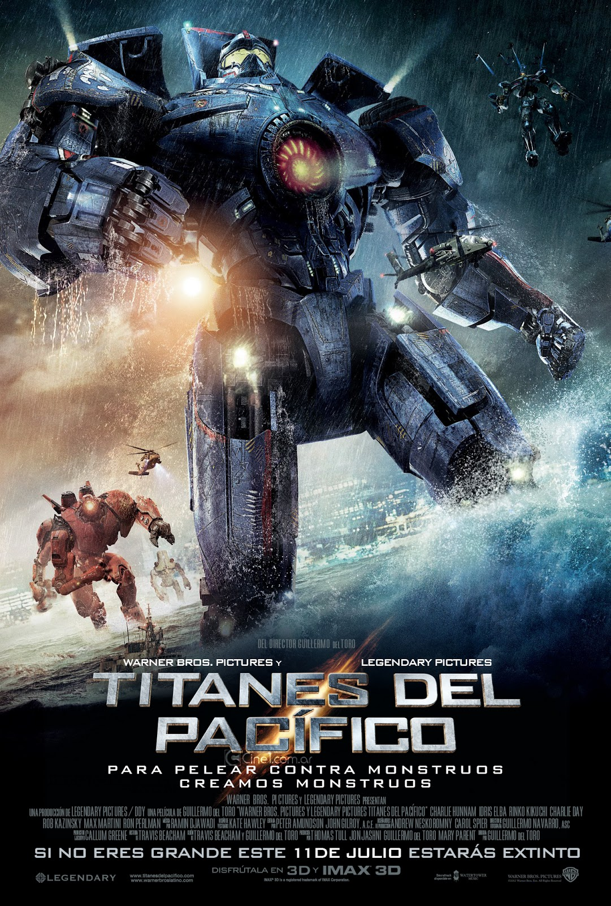

 <!--<!DOCTYPE html>
<html lang="en">
<head>
    <meta charset="UTF-8">
    <meta name="viewport" content="width=, initial-scale=1.0">
    <title>Proyecto Integrador</title>
    <link rel="stylesheet" href="css/master.css">
    <link href="https://fonts.googleapis.com/css2?family=Russo+One&display=swap" rel="stylesheet">
    <link href="https://fonts.googleapis.com/css2?family=Montserrat&display=swap" rel="stylesheet">
</head>
<body>
    <main class="conteiner">
        <header class="header">
            <div class="logo">
                <a href="index.html"></a>
            </div>
            <nav class="menu">
                <ul class="opciones">
                    <li>
                        <a href="index.html">Inicio</a>
                    </li>
                    <li>
                        <a href="generos.html">Géneros</a>
                    </li>
                    <li>
                        <a href="#">Favoritos</a>
                    </li>
                    <li>
                        <a href="#"><ion-icon name="search-outline"></ion-icon></a>
                    </li>
                </ul>
            </nav>
        </header>
        <section class="detalle">
            <figure class="infofoto">
                
            </figure>
            <article class="info">
                <h2> Titanes del Pacifico</h2>
                <br>
                <h3> Cuando legiones de monstruosas criaturas, denominadas Kaiju, comienzan a salir del mar, se inicia una guerra que acabará con millones de vidas y que consumirá los recursos de la humanidad durante interminables años. Para combatir a los Kaiju gigantes diseñan un tipo especial de arma: enormes robots, llamados Jaegers, que son controlados simultáneamente por dos pilotos cuyas mentes están bloqueadas en un puente neural.</h3>
                <br>
                <p>Director: Guillermo del Toro</p>
                <p>Género: Acción Aventura Ciencia Ficción</p>
                <p>Actores: Brad William Henke, Brian Frank, Burn Gorman, Charlie Day.</p>
                <p>Duración: 2h 11m  Estreno: 2013  Definicion: HD</p>
                
            </article>
        </section>


        <footer class="footer">
            <article class="partesuperior">
                <h2>Creadores de la página web: Francisco Rolón, Tomás Jarsun y Joaquín Ríos</h2>
            </article>
            <article class="parteinferior">
                <a href="https://www.instagram.com/" alt="pagina" target="_blank"><ion-icon name="logo-instagram"></ion-icon></a>
                <a href="https://www.facebook.com" alt="pagina" target="_blank"><ion-icon name="logo-facebook"></ion-icon></a>
                <a href="https://www.twitter.com" alt="pagina" target="_blank"><ion-icon name="logo-twitter"></ion-icon></a>
            </article>
        </footer>
    </main>
    <script src="https://unpkg.com/ionicons@5.1.2/dist/ionicons.js"></script>   

</body>
</html>
-->
